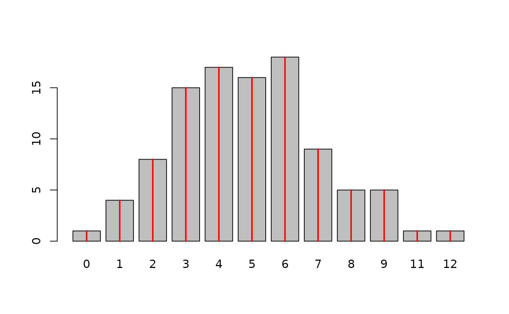
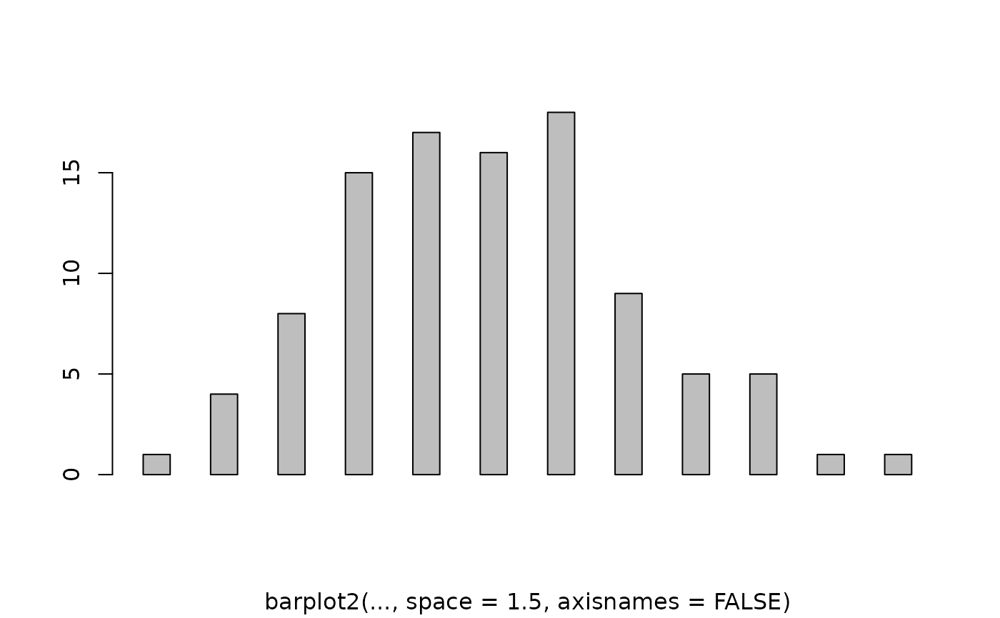

Enhanced Bar Plots
barplot2.RdAn enhancement of the standard barplot() function. Creates a bar plot with vertical or horizontal bars. Can plot confidence intervals for each bar, a lined grid behind the bars, change plot area color and logarithmic axes may be used.
# Default S3 method
barplot2(height, width = 1, space = NULL,
names.arg = NULL, legend.text = NULL, beside = FALSE,
horiz = FALSE, density = NULL, angle = 45,
col = NULL, prcol = NULL, border = par("fg"),
main = NULL, sub = NULL, xlab = NULL, ylab = NULL,
xlim = NULL, ylim = NULL, xpd = TRUE, log = "",
axes = TRUE, axisnames = TRUE,
cex.axis = par("cex.axis"), cex.names = par("cex.axis"),
inside = TRUE, plot = TRUE, axis.lty = 0, offset = 0,
plot.ci = FALSE, ci.l = NULL, ci.u = NULL,
ci.color = "black", ci.lty = "solid", ci.lwd = 1, ci.width = 0.5,
plot.grid = FALSE, grid.inc = NULL,
grid.lty = "dotted", grid.lwd = 1, grid.col = "black",
add = FALSE, panel.first = NULL, panel.last = NULL, ...)Arguments
- height
either a vector or matrix of values describing the bars which make up the plot. If
heightis a vector, the plot consists of a sequence of rectangular bars with heights given by the values in the vector. Ifheightis a matrix andbesideisFALSEthen each bar of the plot corresponds to a column ofheight, with the values in the column giving the heights of stacked “sub-bars” making up the bar. Ifheightis a matrix andbesideisTRUE, then the values in each column are juxtaposed rather than stacked.- width
optional vector of bar widths. Re-cycled to length the number of bars drawn. Specifying a single value will no visible effect unless
xlimis specified.- space
the amount of space (as a fraction of the average bar width) left before each bar. May be given as a single number or one number per bar. If
heightis a matrix andbesideisTRUE,spacemay be specified by two numbers, where the first is the space between bars in the same group, and the second the space between the groups. If not given explicitly, it defaults toc(0,1)ifheightis a matrix andbesideisTRUE, and to 0.2 otherwise.- names.arg
a vector of names to be plotted below each bar or group of bars. If this argument is omitted, then the names are taken from the
namesattribute ofheightif this is a vector, or the column names if it is a matrix.- legend.text
a vector of text used to construct a legend for the plot, or a logical indicating whether a legend should be included. This is only useful when
heightis a matrix. In that case given legend labels should correspond to the rows ofheight; iflegend.textis true, the row names ofheightwill be used as labels if they are non-null.- beside
a logical value. If
FALSE, the columns ofheightare portrayed as stacked bars, and ifTRUEthe columns are portrayed as juxtaposed bars.- horiz
a logical value. If
FALSE, the bars are drawn vertically with the first bar to the left. IfTRUE, the bars are drawn horizontally with the first at the bottom.- density
a vector giving the the density of shading lines, in lines per inch, for the bars or bar components. The default value of
NULLmeans that no shading lines are drawn. Non-positive values ofdensityalso inhibit the drawing of shading lines.- angle
the slope of shading lines, given as an angle in degrees (counter-clockwise), for the bars or bar components.
- col
a vector of colors for the bars or bar components. By default, grey is used if
heightis a vector, andheat.colors(nrow(height))ifheightis a matrix.- prcol
the color to be used for the plot region.
- border
the color to be used for the border of the bars.
- main, sub
overall and sub titles for the plot.
- xlab
a label for the x axis.
- ylab
a label for the y axis.
- xlim
limits for the x axis.
- ylim
limits for the y axis.
- xpd
logical. Should bars be allowed to go outside region?
- log
a character string which contains `"x"' if the x axis is to be logarithmic, `"y"' if the y axis is to be logarithmic and `"xy"' or `"yx"' if both axes are to be logarithmic.
- axes
logical. If
TRUE, a vertical (or horizontal, ifhorizis true) axis is drawn.- axisnames
logical. If
TRUE, and if there arenames.arg(see above), the other axis is drawn (withlty = 0) and labeled.- cex.axis
expansion factor for numeric axis labels.
- cex.names
expansion factor for names.
- inside
logical. If
TRUE, the lines which divide adjacent (non-stacked!) bars will be drawn. Only applies whenspace = 0(which it partly is whenbeside = TRUE).
- plot
logical. If
FALSE, nothing is plotted.- axis.lty
the graphics parameter
ltyapplied to the axis and tick marks of the categorical (default horzontal) axis. Note that by default the axis is suppressed.- offset
a vector indicating how much the bars should be shifted relative to the x axis.
- plot.ci
logical. If
TRUE, confidence intervals are plotted over the bars. Note that if a stacked bar plot is generated, confidence intervals will not be plotted even ifplot.ci = TRUE- ci.l,ci.u
The confidence intervals (ci.l = lower bound, ci.u = upper bound) to be plotted if
plot.ci=TRUE. Values must have the same dim structure asheight.- ci.color
the color for the confidence interval line segments
- ci.lty
the line type for the confidence interval line segments
- ci.lwd
the line width for the confidence interval line segments
- ci.width
length of lines used for the "t" at the end of confidence interval line segments, as a multple of
width. Defaults to 0.5.- plot.grid
if
TRUEa lined grid will be plotted behind the bars- grid.inc
the number of grid increments to be plotted
- grid.lty
the line type for the grid
- grid.lwd
the line width for the grid
- grid.col
the line color for the grid
- add
logical, if
TRUEadd barplot to current plot.- panel.first
An expression to be evaluated after the plot region coordinates have been set up, but prior to the drawing of the bars and other plot region contents. This can be useful to add additional plot region content behind the bars. This will also work if
add=TRUE- panel.last
An expression to be evaluated after the bars have been drawn, but prior to the addition of confidence intervals, a legend and the axis annotation
- ...
further graphical parameters (
par) are passed toplot.window(),title()andaxis.
Details
This is a generic function, it currently only has a default method. A formula interface may be added eventually.
Value
A numeric vector (or matrix, when beside = TRUE), say
mp, giving the coordinates of all the bar midpoints
drawn, useful for adding to the graph.
If beside is true, use colMeans(mp) for the
midpoints of each group of bars, see example.
Note
Prior to R 1.6.0, barplot behaved as if axis.lty = 1,
unintentionally.
0 (zero) and NA values in height will not be plotted if
using logarithmic scales.
If there are NA values in height and beside = FALSE,
values after the NA will not be plotted in stacked bars.
Examples
tN <- table(Ni <- rpois(100, lambda = 5))
r <- barplot2(tN, col = 'gray')
#- type = "h" plotting *is* `bar'plot
lines(r, tN, type = 'h', col = 'red', lwd = 2)

barplot2(tN, space = 1.5, axisnames = FALSE,
sub = "barplot2(..., space = 1.5, axisnames = FALSE)")

data(VADeaths, package = "datasets")
barplot2(VADeaths, plot = FALSE)
#> [1] 0.7 1.9 3.1 4.3
barplot2(VADeaths, plot = FALSE, beside = TRUE)
#> [,1] [,2] [,3] [,4]
#> [1,] 1.5 7.5 13.5 19.5
#> [2,] 2.5 8.5 14.5 20.5
#> [3,] 3.5 9.5 15.5 21.5
#> [4,] 4.5 10.5 16.5 22.5
#> [5,] 5.5 11.5 17.5 23.5
mp <- barplot2(VADeaths) # default
tot <- colMeans(VADeaths)
text(mp, tot + 3, format(tot), xpd = TRUE, col = "blue")
 barplot2(VADeaths, beside = TRUE,
col = c("lightblue", "mistyrose", "lightcyan",
"lavender", "cornsilk"),
legend = rownames(VADeaths), ylim = c(0, 100))
title(main = "Death Rates in Virginia", font.main = 4)
barplot2(VADeaths, beside = TRUE,
col = c("lightblue", "mistyrose", "lightcyan",
"lavender", "cornsilk"),
legend = rownames(VADeaths), ylim = c(0, 100))
title(main = "Death Rates in Virginia", font.main = 4)
 # Example with confidence intervals and grid
hh <- t(VADeaths)[, 5:1]
mybarcol <- "gray20"
ci.l <- hh * 0.85
ci.u <- hh * 1.15
mp <- barplot2(hh, beside = TRUE,
col = c("lightblue", "mistyrose",
"lightcyan", "lavender"),
legend = colnames(VADeaths), ylim = c(0, 100),
main = "Death Rates in Virginia", font.main = 4,
sub = "Faked 95 percent error bars", col.sub = mybarcol,
cex.names = 1.5, plot.ci = TRUE, ci.l = ci.l, ci.u = ci.u,
plot.grid = TRUE)
mtext(side = 1, at = colMeans(mp), line = -2,
text = paste("Mean", formatC(colMeans(hh))), col = "red")
box()
# Example with horizontal bars, grid and logarithmic x axis
barplot2(1:10 , log = "x", plot.grid = TRUE, grid.inc = 10,
xlim = c(0.5, 20), horiz = TRUE, cex.axis = 0.9,
prcol = "gray95")
box()
# Bar shading example
barplot2(VADeaths, angle = 15 + 10 * 1:5, density = 20, col = "black",
legend = rownames(VADeaths))
title(main = list("Death Rates in Virginia", font = 4))
# border :
barplot2(VADeaths, border = "dark blue")
# Example with confidence intervals and grid
hh <- t(VADeaths)[, 5:1]
mybarcol <- "gray20"
ci.l <- hh * 0.85
ci.u <- hh * 1.15
mp <- barplot2(hh, beside = TRUE,
col = c("lightblue", "mistyrose",
"lightcyan", "lavender"),
legend = colnames(VADeaths), ylim = c(0, 100),
main = "Death Rates in Virginia", font.main = 4,
sub = "Faked 95 percent error bars", col.sub = mybarcol,
cex.names = 1.5, plot.ci = TRUE, ci.l = ci.l, ci.u = ci.u,
plot.grid = TRUE)
mtext(side = 1, at = colMeans(mp), line = -2,
text = paste("Mean", formatC(colMeans(hh))), col = "red")
box()
# Example with horizontal bars, grid and logarithmic x axis
barplot2(1:10 , log = "x", plot.grid = TRUE, grid.inc = 10,
xlim = c(0.5, 20), horiz = TRUE, cex.axis = 0.9,
prcol = "gray95")
box()
# Bar shading example
barplot2(VADeaths, angle = 15 + 10 * 1:5, density = 20, col = "black",
legend = rownames(VADeaths))
title(main = list("Death Rates in Virginia", font = 4))
# border :
barplot2(VADeaths, border = "dark blue")